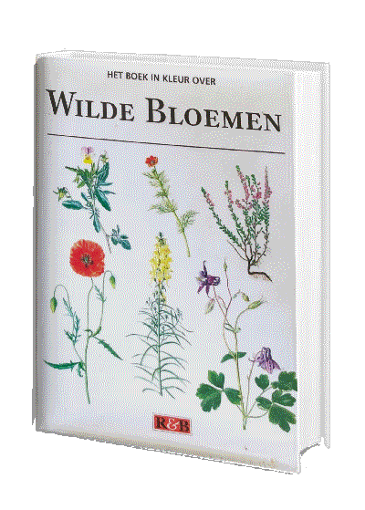
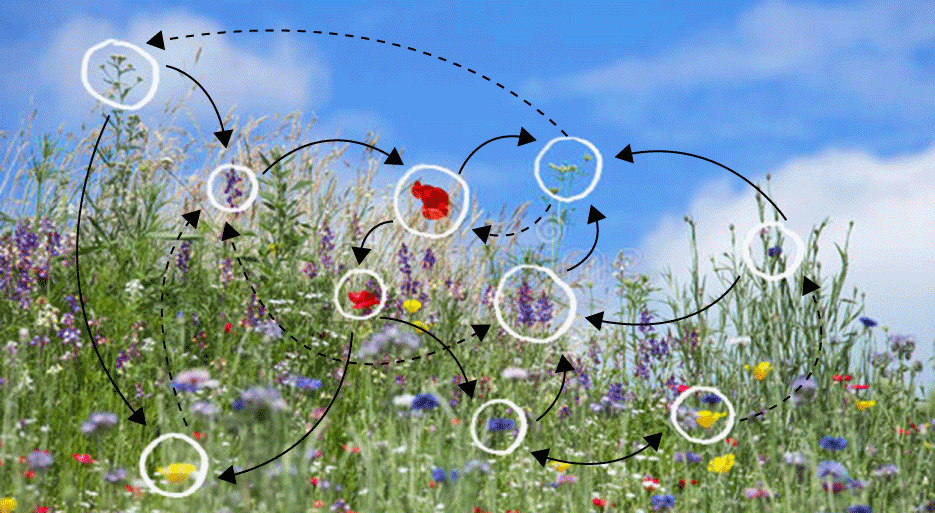
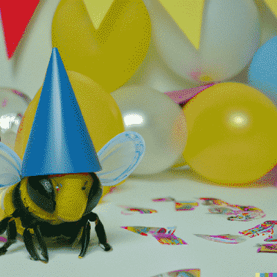

📘 - self-help wisdom / external input
✅ - bullet journaling obsession
🍌 - food, bananas, a person with a peel
🎂 - birthdays. Birthday sadness. New chances
🪆 - the many layers of Dewi's soul
🐝 - busy bee work bee
♓️ - pisces
💌 - a love letter to dewi
🪷 - calmness, spirituality, buddhist wisdoms
🏠 - building a house - house metaphor
🪩 - celebration
🔍 - searching. Soul searching. Searching for truth
🔥 - a firy lady
🍓 - she likes strawberries .. (hoe is Dewi als een aardbei?)
Dewi
Dewi is a beautiful and amazing human being living in the Dewiverse. The Dewiverse is full of life
wisdom, colours, garlands, self-help podcasts, hand-written letters, bullet points and snacks.
Dewi likes to consult external sources for guidance on how to live life, perceive the world and deal
with other beings,
but sometimes forgets she already has an entire Dewiverse inside of her to guide and direct her from
within. That's why we
have created this external wiki of Dewiness.
Dewikipedia is an online open-content collaborative encyclopedia; that is, a voluntary
association of Elliott and Emma working to develop a common resource of Dewian knowledge. The
structure of the project allows Elliott and Emma to alter its content. Please be
advised that nothing found here has necessarily been reviewed by people with the expertise required to
provide you with complete, accurate, or reliable information.
That is not to say that you will not find valuable and accurate information in Dewikipedia; much of the
time you will. However, Dewikipedia cannot guarantee the validity of the information found here.
The
content of any given article may recently have been changed, vandalized, or altered by someone whose
opinion does not correspond with the state of knowledge in the relevant fields. Note that most other
encyclopedias and reference works also have disclaimers.
dewi
Born
23 February 1992 (today)
sun
Pisces
moon
Scorpio
rising
Leo
Etymology
De・wi /ˈdeɪwi/ "De" means 'the' and "wi(e)" means 'who'. This
expresses the duality in Dewi; the constant flow between defining things and questioning who
people are, including herself. [Dew・i] can also be explained as dew (water in the form of droplets that appears on thin, exposed
objects in the morning or evening due to condensation) and I, a
vertical vowel used to refer
to oneself.
drops of Dew on an I-shaped plant.
🐝 life
One could say Dewi buzzes through life like a little bee buzzing from flower to flower. She
likes many types of
flowers, especially wild flowers. She may be a bit of a wildflower herself. She also owns a
book
about them. Therefor we can conclude that Dewi has
both theoretical and empirical knowledge about wild flowers.

a flower-book that Dewi owns

from left to right: work-flower; gym-flower; home-flower; friends-flower;
design-flower; romance-flower; party-flower; climbing-flower; meditation-flower;
family-flower; music-flower; yoga-flower; unknown flowers

a bee on its birthday